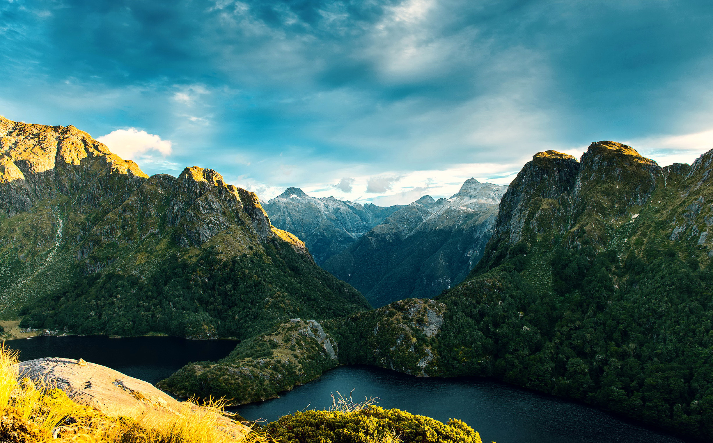
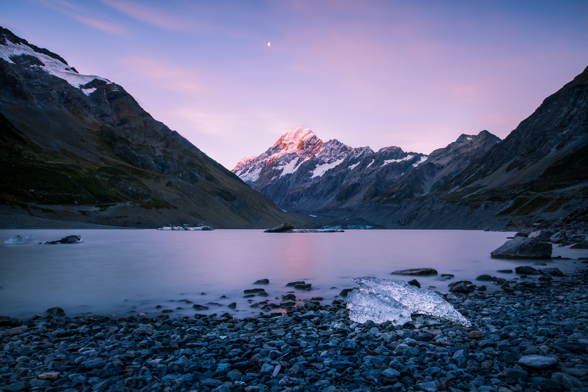
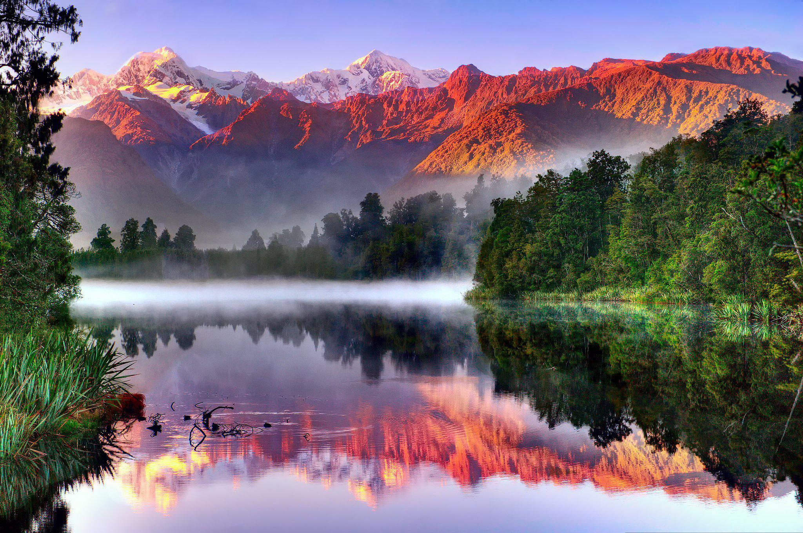
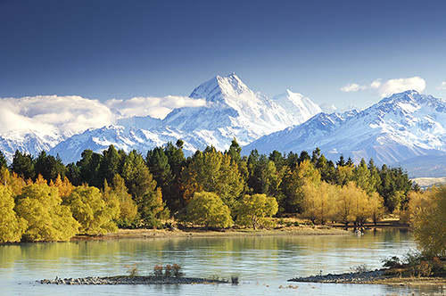
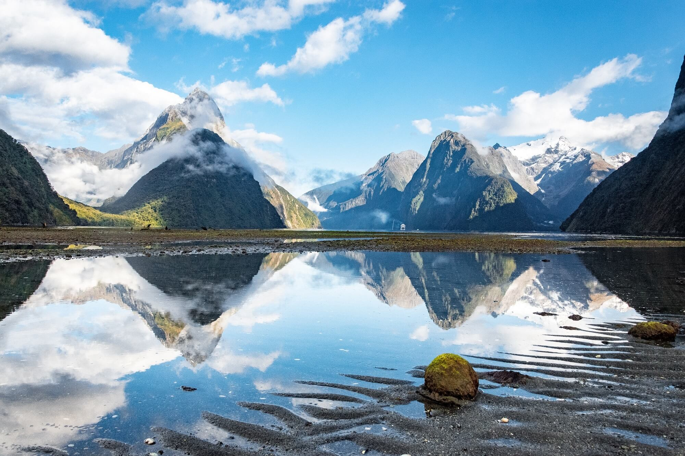
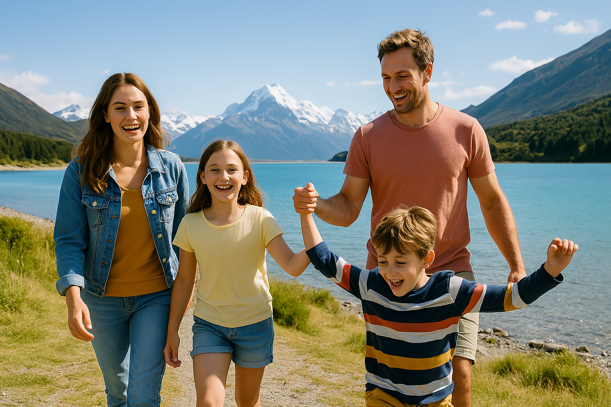
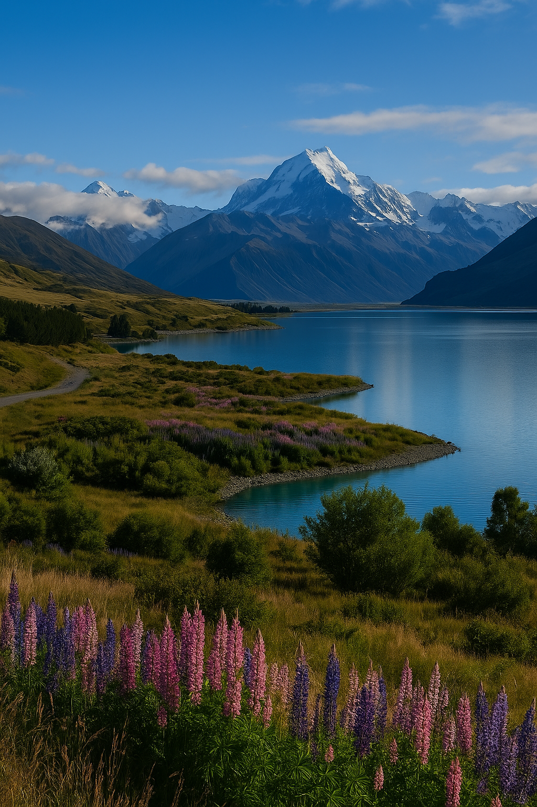

Perjalanan 8 hari menyusuri South Island: Christchurch, Lake Tekapo, Lake Pukaki, Mount Cook, Queenstown, dan Milford Sound — dirancang untuk kamu yang ingin menikmati New Zealand dengan nyaman, terarah, dan tetap personal.
Tiga pilihan keberangkatan untuk menikmati musim semi New Zealand dengan rute favorit South Island.
Spring escape pertama untuk kamu yang ingin berangkat lebih awal.
Harga mulai
IDR 31.500.000
per pax • max 10 peserta
Rekomendasi utama untuk campaign October trip.
Harga mulai
IDR 31.500.000
per pax • max 10 peserta
Alternatif November untuk peserta yang butuh jadwal lebih fleksibel.
Harga mulai
IDR 31.500.000
per pax • max 10 peserta
Dokumentasi real trip bersama peserta Garuda Kiwi Tour — supaya kamu bisa membayangkan vibe perjalanannya.
Selain open trip, kami juga menyediakan private trip yang bisa disesuaikan dengan kebutuhan keluarga, pasangan, maupun grup kecil.

Christchurch • Tekapo • Lake Pukaki • Mt Cook • Queenstown • Milford Sound
Mulai dari
IDR 31.500.000
Small Group • Max 10 Pax • Oct-Nov 2026

Eksplorasi Christchurch, Tekapo, Mt Cook, Queenstown & Milford Sound.
Mulai dari IDR 20.500.000/pax
Lihat Detail
Auckland, Rotorua, Tekapo, Queenstown & Milford Sound dalam satu perjalanan epik.
Mulai dari IDR 25.500.000/pax
Lihat Detail
Tur ramah keluarga menjelajahi Auckland, Rotorua, Hobbiton, Taupo, dan Wellington.
Mulai dari IDR 18.800.000/pax
Lihat Detail
Pilih destinasi, aktivitas, dan kebutuhanmu. Tim kami siap merancang itinerary yang pas.
Harga Menyesuaikan
Mulai Custom PaketBantuan persiapan perjalanan seperti Visa Assistance dan eSIM agar trip kamu lebih praktis.
Garuda Kiwi Tour tidak hanya menyiapkan itinerary, tapi juga membantu proses persiapan perjalanan agar lebih rapi dari awal sampai berangkat.
Open Trip & Private Trip New Zealand dengan rute yang dirancang lebih personal dan nyaman.
Bantuan persiapan dokumen, review, pengisian form, dan final checking sebelum submit.
Keputusan akhir visa tetap berada pada pihak imigrasi terkait.
Solusi internet praktis untuk perjalanan ke New Zealand, Australia, Asia, Eropa, dan destinasi lainnya.
Garuda Kiwi Tour adalah New Zealand Travel Specialist yang membantu wisatawan Indonesia menjelajahi New Zealand melalui open trip, private trip, dan travel support seperti visa assistance serta eSIM.
Kami fokus pada pengalaman perjalanan yang nyaman, rapi, dan terasa personal — bukan sekadar mengejar banyak destinasi.
Rute dibuat berdasarkan pengalaman real di New Zealand.
Small group, lebih nyaman dan tidak terlalu terburu-buru.
Dibantu dari persiapan, visa, hingga kebutuhan perjalanan.
Dokumentasi destinasi & momen real trip bersama peserta Garuda Kiwi Tour.
Swipe ke samping untuk lihat foto lainnya.
Harga dapat menyesuaikan skema paket yang ditawarkan. Detail final akan dikirim melalui itinerary dan quotation resmi.
Setiap batch dirancang sebagai small group dengan maksimal 10 peserta agar perjalanan lebih nyaman.
Bisa. Kami menyediakan Visa Assistance sebagai layanan terpisah, termasuk arahan dokumen, review, dan persiapan submit.
Ya, private trip bisa dibuat sesuai tanggal, jumlah peserta, dan kebutuhan perjalanan keluarga atau grup Anda.
"Tim Garuda Kiwi Tour benar-benar memikirkan kenyamanan kami. Orang tua saya sangat senang, dan ini jadi liburan keluarga yang paling berkesan!"
"Sangat detail, mulai dari pengurusan visa sampai tips kuliner dan spot foto terbaik. Rasanya seperti ditemani teman sendiri selama perjalanan!"
"Tour privatnya worth it! Kami bisa bebas atur waktu, nggak terburu-buru, dan guide-nya ramah banget."
Tanya slot open trip, private trip, visa assistance, atau kebutuhan eSIM perjalanan Anda.
Konsultasi via WhatsApp